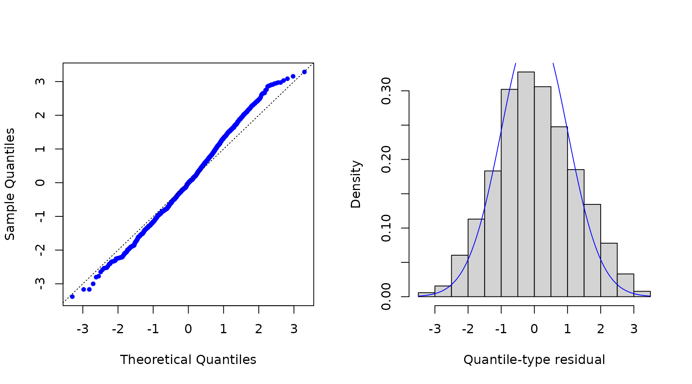
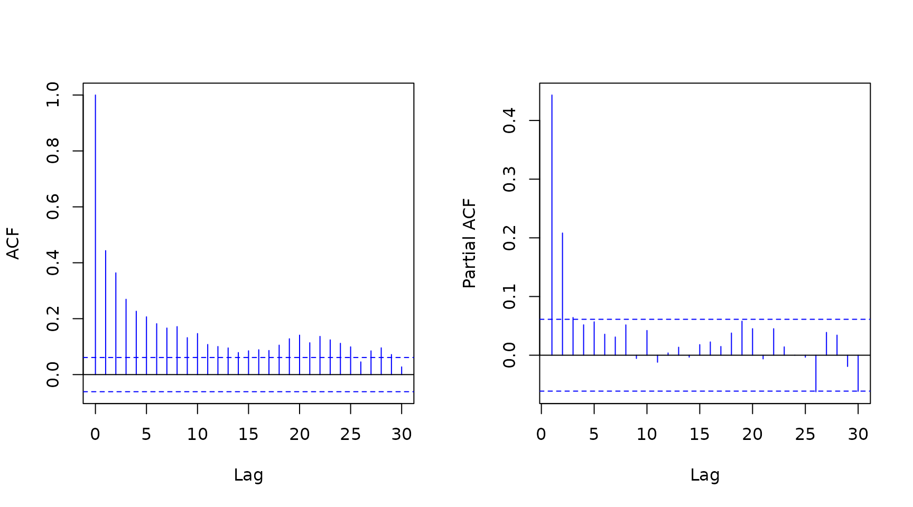

Introduction to the mtarm Package
Luis Hernando Vanegas
Sergio Alejandro Calderón
Luz Marina Rondón
Source:vignettes/Introduction.Rmd
Introduction.RmdMultivariate Threshold Autoregressive (TAR) models
The mtarm package provides a computational tool designed
for Bayesian estimation, inference, and forecasting in multivariate
Threshold Autoregressive (TAR) models. These models provide a versatile
approach for modeling nonlinear multivariate time series and include
multivariate Self-Exciting Threshold Autoregressive (SETAR) and Vector
Autoregressive (VAR) models as particular cases (Vanegas et al. 2025). The package accommodates
a broad class of innovation distributions beyond the Gaussian
assumption, such as
Student-,
slash, symmetric hyperbolic, Laplace, contaminated normal, skew-normal,
and
skew-
distributions, thereby enabling robust modeling of heavy tails,
asymmetry, and other non-Gaussian characteristics.
Installation
Install from CRAN
install.packages("mtarm")Application: Temperature, precipitation, and two river flows in Iceland
Dataset
The data are available in the object `iceland.rf` and were obtained from (Tong 1990), who provided a detailed description of the geographical and meteorological characteristics of the rivers and analyzed each series individually. Subsequently, (Tsay 1998) conducted a bivariate analysis of the same dataset. The focus is on the bivariate time series , where and denote the daily river flow (in cubic meters per second, ) of the Jökulsá Eystri and Vatnsdalsá rivers, respectively. The sample covers the period from 1972 to 1974, comprising 1095 observations. The exogenous variables include daily precipitation , measured in millimeters (), and temperature , measured in degrees Celsius (), both recorded at the meteorological station in Hveravellir. Precipitation corresponds to the accumulated rainfall from 9:00 A.M. of the previous day to 9:00 A.M. of the current day.
library(mtarm)
data(iceland.rf)
str(iceland.rf)
#> 'data.frame': 1096 obs. of 5 variables:
#> $ Vatnsdalsa : num 16.1 19.2 14.5 11 13.6 12.5 10.5 10.1 9.68 9.02 ...
#> $ Jokulsa : num 30.2 29 28.4 27.8 27.8 27.8 27.8 27.8 27.8 27.3 ...
#> $ Precipitation: num 8.1 4.4 7 0 0 0 1.9 1.2 0 0.1 ...
#> $ Temperature : num 0.9 1.6 0.1 0.6 2 0.8 1.4 1.3 2.2 0.1 ...
#> $ Date : Date, format: "1972-01-01" "1972-01-02" ...
summary(iceland.rf[,-5])
#> Vatnsdalsa Jokulsa Precipitation Temperature
#> Min. : 3.670 Min. : 22.00 Min. : 0.000 Min. :-22.4000
#> 1st Qu.: 6.100 1st Qu.: 26.70 1st Qu.: 0.000 1st Qu.: -4.2000
#> Median : 7.500 Median : 31.40 Median : 0.300 Median : 0.3000
#> Mean : 8.938 Mean : 41.15 Mean : 2.519 Mean : -0.4407
#> 3rd Qu.: 9.240 3rd Qu.: 50.90 3rd Qu.: 2.500 3rd Qu.: 3.9000
#> Max. :54.000 Max. :143.00 Max. :79.300 Max. : 13.9000Model specification
Following (Tsay 1998), the series are modeled using a specification given by
$$Y_t=\sum\limits_{j=1}^2 I(Z_{t-h}\in(c_{j-1},c_j])\Big(\!{\phi}_0^{^{(j)}}+\sum\limits_{i=1}^{15}\boldsymbol{\phi}_i^{^{(j)}}Y_{t-i}+\sum\limits_{i=1}^{4}\boldsymbol{\beta}_i^{^{(j)}}\!X_{t-i}+\sum\limits_{i=1}^{2}{\delta}_i^{^{(j)}}\!Z_{t-i}+\epsilon_t^{^{(j)}}\!\Big),$$
where is the error term. The last 55 observations (from November 7 to December 31, 1974), corresponding to of the sample, are excluded from the estimation stage and reserved for out-of-sample forecast evaluation. The following code requests the estimation for the specification under Gaussian, Slash, Student-, and Laplace error distributions.
Parameter estimation
fits <- mtar_grid(~ Jokulsa + Vatnsdalsa | Temperature | Precipitation,
data=iceland.rf, subset={Date<="1974-11-06"},
row.names=Date, nregim.min=2, nregim.max=2, p.min=15,
p.max=15, q.min=4, q.max=4, d.min=2, d.max=2,
n.burnin=200, n.sim=300, n.thin=3, ssvs=TRUE,
dist=c("Gaussian","Slash","Student-t","Laplace"),
plan_strategy="multisession")
fits
#>
#>
#> Sample size :1026 time points (1972-01-16 to 1974-11-06)
#>
#> Output Series :Jokulsa | Vatnsdalsa
#>
#> Threshold Series (TS):Temperature with a estimated delay equal to 0
#>
#> Exogenous Series (ES):Precipitation
#>
#> Error Distribution :Gaussian
#>
#> Number of regimes :2 to 2
#>
#> Deterministics :Intercept
#>
#> Autoregressive orders:15 to 15
#>
#> Maximum lags for ES :4 to 4
#>
#> Maximum lags for TS :2 to 2Model comparison using forecast accuracy measures
Adjusted within-sample
The following code requests Deviance Information Criterion (DIC) (Spiegelhalter et al. 2002, 2014) and Watanabe-Akaike Information Criterion (WAIC) (Watanabe 2010) values.
Out-of-sample
In addition, the following code provides the median of the log-score (Good 1952), the Energy Score (ES) (Gneiting et al. 2008)—a multivariate extension of the Continuous Ranked Probability Score (CRPS)(Matheson and Winkler 1976; Grimit et al. 2006)—and the Absolute Percentage Error (APE), all computed from the observed and forecasted values for the last 55 observations.
newdata <- subset(iceland.rf, Date>"1974-11-06")
oos <- out_of_sample(fits, newdata=newdata, n.ahead=nrow(newdata),
by.component=TRUE, FUN=median)
oos[,c(1,2,5,6)]
#> Log.Score Energy.Score Jokulsa.APE Vatnsdalsa.APE
#> Gaussian.2.15.4.2 3.024220 1.646199e+00 4.619251e+00 1.991865e+01
#> Laplace.2.15.4.2 3.314595 1.935466e+00 4.052850e+00 1.854437e+01
#> Slash.2.15.4.2 9.130912 7.594655e+12 3.579764e+12 2.913993e+14
#> Student-t.2.15.4.2 3.595332 2.439649e+00 3.705919e+00 2.032945e+01Residuals
res <- residuals(fits$`Student-t.2.15.4.2`)
par(mfrow=c(1,2))
qqnorm(res$full, pch=20, col="blue", main="")
abline(0, 1, lty=3)
hist(res$full, freq=FALSE, xlab="Quantile-type residual", ylab="Density", main="")
curve(dnorm(x), col="blue", add=TRUE)

Forecasting
pred <- predict(fits$`Student-t.2.15.4.2`, newdata=newdata, n.ahead=nrow(newdata),
row.names=Date, credible=0.8)
head(pred$summary)
#> Jokulsa.Mean Jokulsa.Lower Jokulsa.Upper Vatnsdalsa.Mean
#> 1974-11-07 27.22411 25.83413 28.38172 7.459212
#> 1974-11-08 27.10426 25.08542 28.74895 7.475009
#> 1974-11-09 26.82978 24.68535 29.09692 7.478093
#> 1974-11-10 26.76476 24.26079 29.24852 7.368186
#> 1974-11-11 26.63432 24.38753 29.62748 7.164742
#> 1974-11-12 26.43304 23.77978 29.16766 7.000178
#> Vatnsdalsa.Lower Vatnsdalsa.Upper
#> 1974-11-07 6.702921 8.253953
#> 1974-11-08 6.290194 8.967442
#> 1974-11-09 5.669948 9.008364
#> 1974-11-10 5.160777 8.918765
#> 1974-11-11 4.619910 8.863631
#> 1974-11-12 4.667036 9.111442
tail(pred$summary)
#> Jokulsa.Mean Jokulsa.Lower Jokulsa.Upper Vatnsdalsa.Mean
#> 1974-12-26 26.11034 22.80819 29.21284 6.082026
#> 1974-12-27 26.14470 22.27307 28.85495 6.103212
#> 1974-12-28 26.12693 22.82816 28.80193 6.165720
#> 1974-12-29 26.10206 22.78421 29.29201 6.146781
#> 1974-12-30 25.98686 22.75780 29.38196 6.079628
#> 1974-12-31 25.95836 22.84104 29.26814 6.138373
#> Vatnsdalsa.Lower Vatnsdalsa.Upper
#> 1974-12-26 3.332409 9.701963
#> 1974-12-27 3.564113 9.670697
#> 1974-12-28 3.523806 9.663045
#> 1974-12-29 3.252980 9.473619
#> 1974-12-30 2.778682 9.131285
#> 1974-12-31 3.547923 10.085894Convergence diagnostics
Geweke statistic
geweke_diagTAR(fits$`Student-t.2.15.4.2`)
#>
#> Fraction in 1st window = 0.1
#>
#> Fraction in 2nd window = 0.5
#> Thresholds:
#>
#> threshold 0.12569
#>
#>
#> Autoregressive coefficients:
#> Regime 1 Regime 2
#> Jokulsa:(Intercept) -2.153633 0.7509429
#> Jokulsa:Jokulsa.lag( 1) 1.438730 0.5940345
#> Jokulsa:Jokulsa.lag( 2) -0.322513 -0.8607335
#> Jokulsa:Vatnsdalsa.lag( 1) 1.809104 -0.6580059
#> Jokulsa:Vatnsdalsa.lag( 2) -2.248465 0.3091728
#> Jokulsa:Temperature.lag(1) 1.2735817
#> Jokulsa:Temperature.lag(2) -0.0335677
#> Vatnsdalsa:(Intercept) -2.175712 0.1368150
#> Vatnsdalsa:Jokulsa.lag( 1) 1.239638 -0.6052781
#> Vatnsdalsa:Jokulsa.lag( 2) -0.709139 0.3380195
#> Vatnsdalsa:Vatnsdalsa.lag( 1) 0.572919 0.8321379
#> Vatnsdalsa:Vatnsdalsa.lag( 2) -0.046631 -0.8718642
#> Vatnsdalsa:Temperature.lag(1) -0.5399509
#> Vatnsdalsa:Temperature.lag(2) -0.0027549
#>
#>
#> Scale parameter:
#> Regime 1 Regime 2
#> Jokulsa.Jokulsa 2.9745 1.941601
#> Jokulsa.Vatnsdalsa 3.0663 0.087331
#> Vatnsdalsa.Vatnsdalsa 1.9048 0.931698
#>
#>
#> Extra parameter:
#>
#> nu -0.2317Effective sample size
effectiveSize_TAR(fits$`Student-t.2.15.4.2`)
#> Thresholds:
#>
#> threshold 68.963
#>
#>
#> Autoregressive coefficients:
#> Regime 1 Regime 2
#> Jokulsa:(Intercept) 196.21 231.123
#> Jokulsa:Jokulsa.lag( 1) 300.00 124.447
#> Jokulsa:Jokulsa.lag( 2) 300.00 97.811
#> Jokulsa:Vatnsdalsa.lag( 1) 230.46 207.389
#> Jokulsa:Vatnsdalsa.lag( 2) 229.69 300.000
#> Jokulsa:Temperature.lag(1) 249.284
#> Jokulsa:Temperature.lag(2) 432.022
#> Vatnsdalsa:(Intercept) 230.77 90.951
#> Vatnsdalsa:Jokulsa.lag( 1) 300.00 248.125
#> Vatnsdalsa:Jokulsa.lag( 2) 253.19 300.000
#> Vatnsdalsa:Vatnsdalsa.lag( 1) 144.64 41.228
#> Vatnsdalsa:Vatnsdalsa.lag( 2) 179.61 44.125
#> Vatnsdalsa:Temperature.lag(1) 397.460
#> Vatnsdalsa:Temperature.lag(2) 300.000
#>
#>
#> Scale parameter:
#> Regime 1 Regime 2
#> Jokulsa.Jokulsa 66.831 303.01
#> Jokulsa.Vatnsdalsa 223.418 251.58
#> Vatnsdalsa.Vatnsdalsa 149.255 167.11
#>
#>
#> Extra parameter:
#>
#> nu 336.76